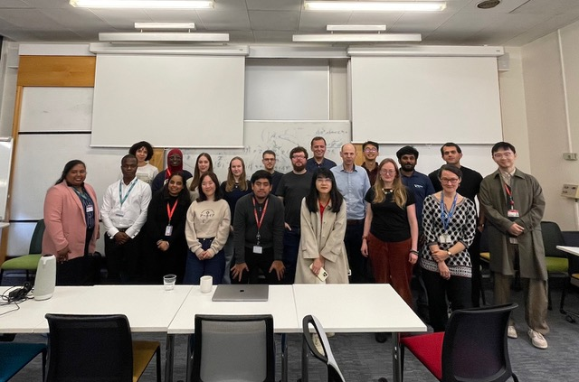
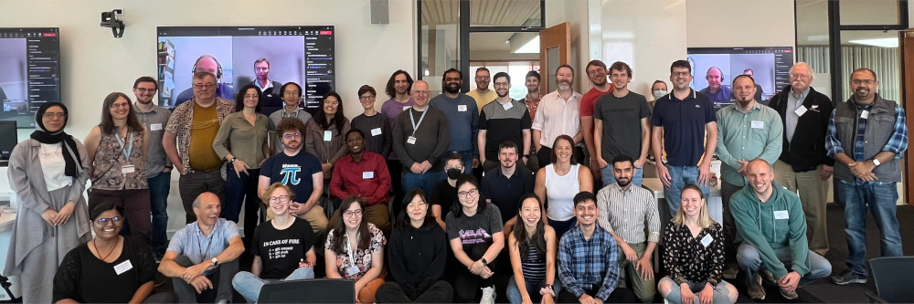

Diversity within the RSE community:
Gender1:
| RSEs | Male | Female | Prefer to self-describe | |
|---|---|---|---|---|
| UK | 71% | 20% | 3% | |
| USA | 78% | 18% | 2% | |
| Germany | 85% | 13% | 1% | |
| World | 80% | 16% | 1% |
Figures rounded to nearest percentage point. Individual countries included where respondent count > 100. The 2022 RSE survey provides insufficient data to be able to report on other aspects of diversity.
In the 2018 International RSE survey, results for the UK showed 79.8% of respondents as male, 14.3% female and 0.5% selecting the “other” option2.
For comparison, from 2021 UK Census results for England and Wales, males represented 52% and females of 48% of all those in employment 3.
But we can also make a difference within the existing community…
“Domain mobility”1 - shows precedent for moving between domains to undertake RSE work - demographics can differ between subject areas.
Data (e.g. 2022 RSE international survey 2) shows many RSEs currently undertaking technical work in a different domain to that of their highest-level qualification.

STEP-UP Champions cohort 1 kick-off, October 2025 - Image credit: Katie Buntic
The STEP-UP Research Technical Champions scheme supports a group of PhD students from the STEP-UP partner institutions to help their peers to develop new technical skills and address technical challenges in their research.

What are your questions?
JC acknowledges support from the STEP-UP project under UKRI EPSRC grant EP/Y530608/1.